Diego
Rodriguez.
Mechanical engineer drawn to physical products that have to work in the place they're used — a teaching otoscope in a vet lab, a rover in the Utah desert, a CO₂ alert in a hibernation cold room. I treat user testing as a design tool, not a checkbox; most of what I ship was shaped by something I learned holding the prototype.
University of Wisconsin–Madison
Open to Minneapolis–Saint Paul
Selected Works — 04 Projects
Veterinary Video Otoscope Housing.
Redesigned a flimsy training prototype into a durable, weighted teaching tool for UW–Madison veterinary labs — approaching the handfeel of the Welch Allyn clinical instrument (≈ 0.87 lb) that students will use in practice. Six production units delivered across three prototype iterations.
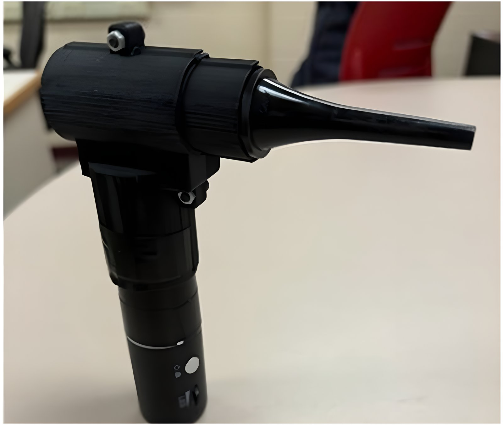
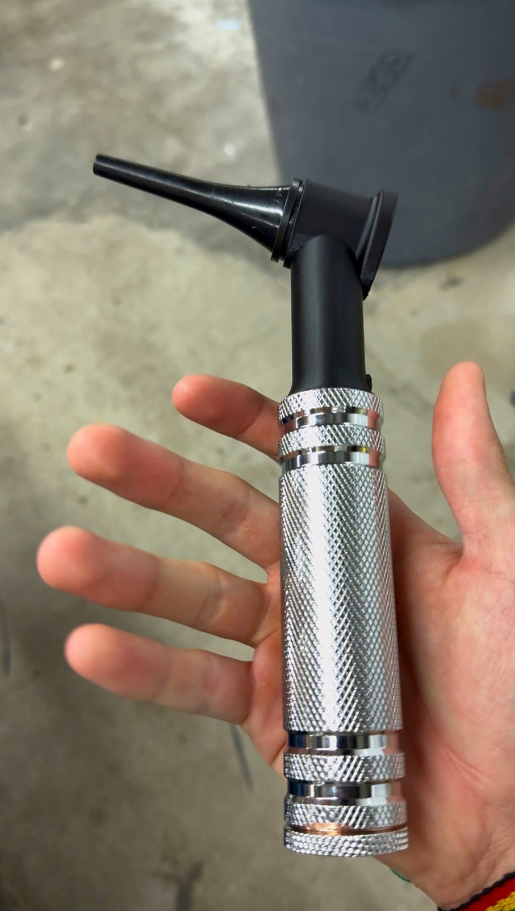
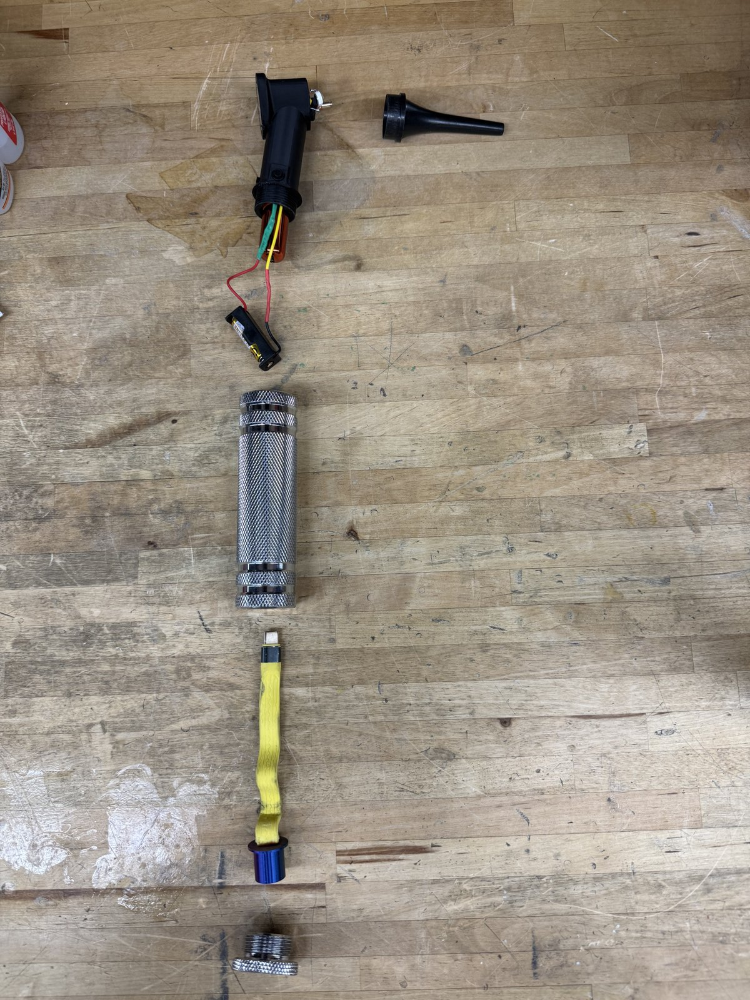
1 2 3 4 5 6 7 8- 1Supplemental LED light
- 23D-printed otoscope head
- 3Bebird wireless camera module
- 4Disposable speculum
- 5Supplemental light battery
- 6Machined knurled steel handle
- 7USB-C charging extension w/ rotating insert
- 8Machined threaded end cap
Plastic prototype felt nothing like a clinical otoscope.
Faculty wanted students to feel a real otoscope — weight, grip, balance — while seeing live video. The Welch Allyn reference weighs ~0.87 lb; the existing BME prototype weighed 0.31 lb, with a plastic split-shell housing, no charging access, and a beam-splitter optical path that bulked out the head.
Pivoted to a sourced camera and a stock steel handle.
Replaced the team's first attempt (a custom ESP32 + beam splitter) with the compact Bebird camera. Used knurled steel dumbbell handles — hollowed on the lathe, threads preserved — as the housing. Designed a 3D-printed head and a rotating insert that lets the cable spin while the end cap threads on.
A 1.1 lb knurled instrument shipping in lab.
Three iterations of CAD, bench, and cadaver testing. Six production units at ≈ $180 each. Diameter and length match the Welch Allyn; weight lands 0.23 lb over target — faculty accepted the trade for grip durability. Supplemental LED added after cadaver testing revealed a brightness gap CAD couldn’t.
Use a knurled steel dumbbell handle as the housing base.
Stock parts gave us the clinical grip texture, the weight, and reusable threads — without custom machining the most ergonomically important surface.
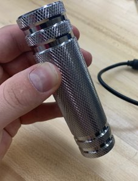
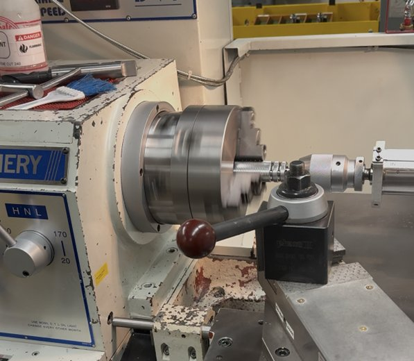
A rotating 3D-printed insert that decouples cable from cap.
The charging cable had to pass through the end cap. The end cap had to rotate to thread. Those two facts together would have ruined the cable on every reassembly.
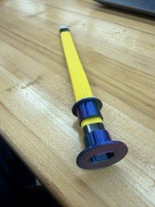
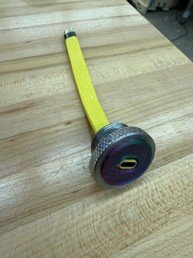
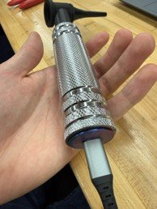
Canine cadaver testing exposed a lighting problem CAD couldn’t.
The Bebird camera’s built-in light was bright enough on a human ear. Inside a real canine ear canal, the geometry blocked ambient light and the image went dark. We added a supplemental LED and battery — with no extra internal space, no obstruction of the camera path, and no compromise to grip diameter.
I selected the LED and a battery that fit alongside the existing charging cable, routed wires around the camera’s field of view, and packaged the additional system without growing the device. The clinical handfeel had to survive.
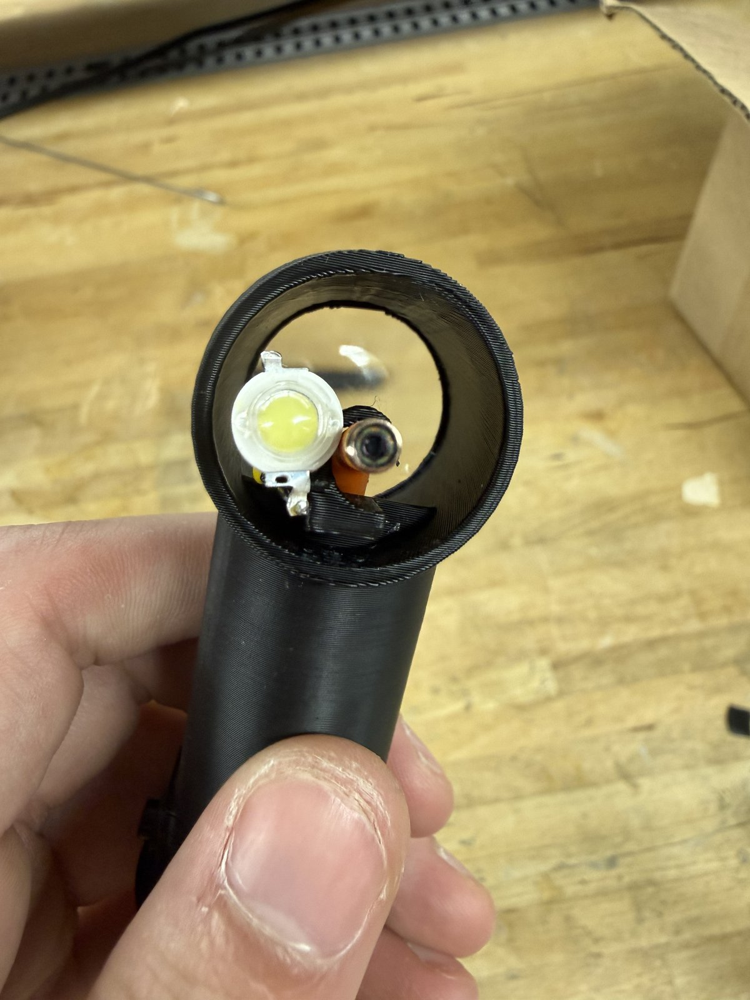
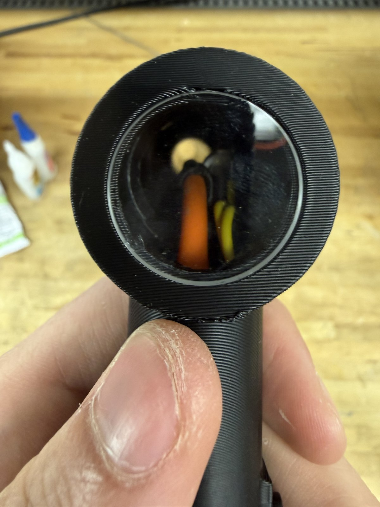
- 3 prototype iterations — CAD, bench, cadaver
- Handle diameter 30 mm — matches Welch Allyn
- Device weight 1.1 lb — 0.23 lb over the 0.87 lb target; faculty accepted the added grip mass
- Supplemental LED added after cadaver testing
- External charging integrated through the end cap
- 6 production units · 40–50 students per lab
Committing to the stock dumbbell handle locked in the geometry — and the mass. A thinner-walled custom steel sleeve (or a deeper lathe bore) could have hit the 0.87 lb target on the nose; I'd run that study earlier next time, before sourcing the handle stock.
I'd also pull the cadaver test forward by a full iteration. The LED gap we found was the kind of thing only a real ear canal reveals — and we caught it late enough that the supplemental LED had to be packaged into a head that wasn't designed for it.
Wisconsin Robotics Swerve-Drive System.
Designed an integrated tube-and-gearbox connection for the swerve modules on Wisconsin Robotics’ ~50 lb URC competition rover. Eliminated module flex, raised the swerve motor above terrain, and enabled reliable in-place turning. The completed rover placed 12th of 34 teams at the University Rover Challenge.
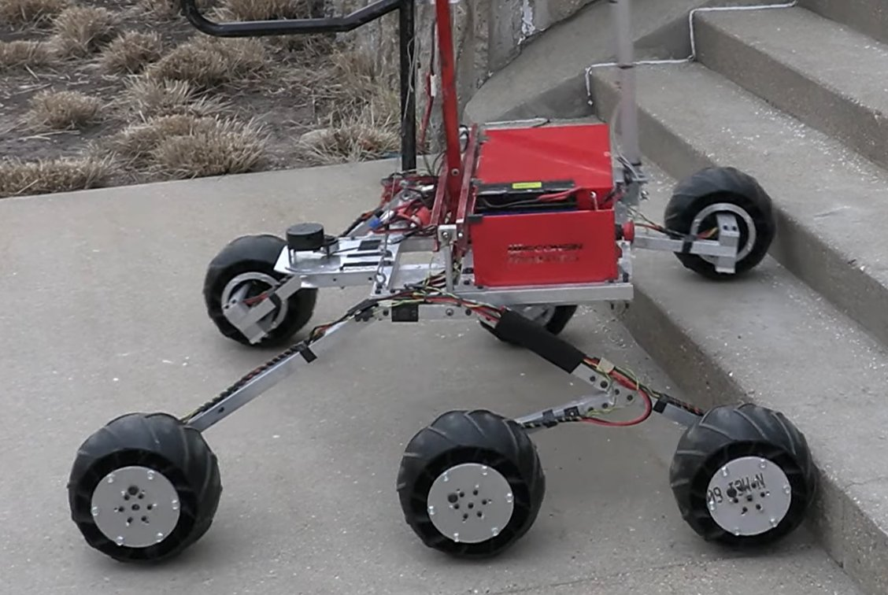
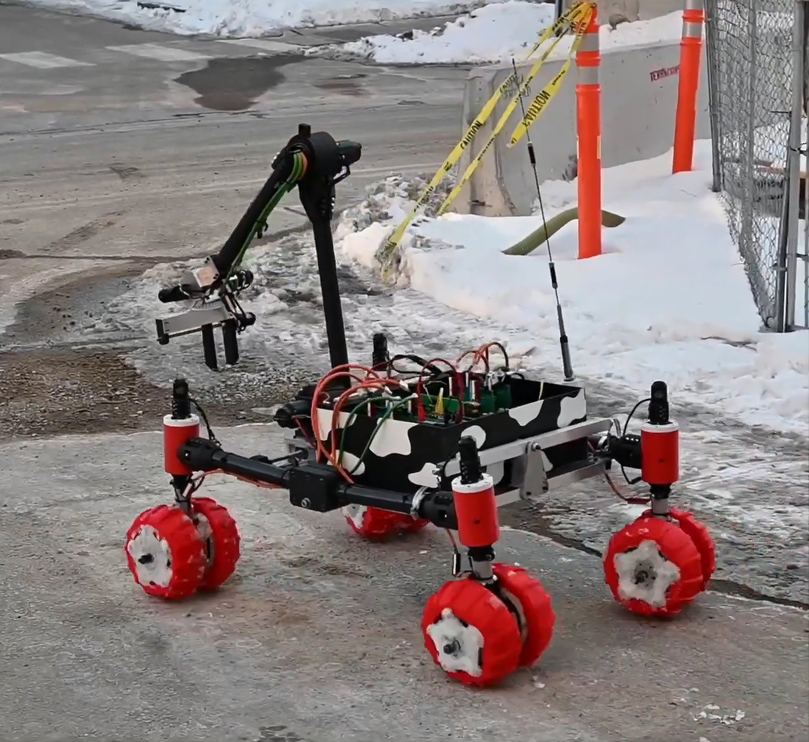
The tube–gearbox interface was the weakest link.
The clamp-style connector flexed under load — modules wobbled, alignment stacked up, the swerve motor sat low enough to take hits on climbs, and in-place turning was unreliable. Steering the rover at competition would not survive that interface.
Integrate the shaft receiver into the gearbox housing.
Sketched clamp and integrated concepts. Picked the integrated version, modified the CAD, ran EES on the connecting shaft across three materials against a SF > 1.8 target, prototyped in 3D print, and presented the design to the drivetrain team.
6061 aluminum, SF 2.08, 12th at URC.
Installed on every swerve module of the competition rover. In-place turning held. Modules stopped wobbling. The motor stayed clean. The team finished 12th of 34 at the University Rover Challenge.
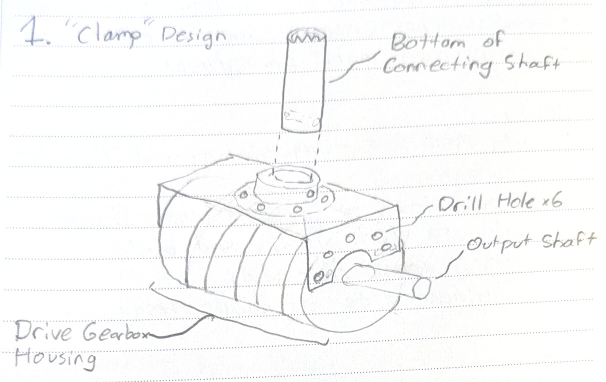
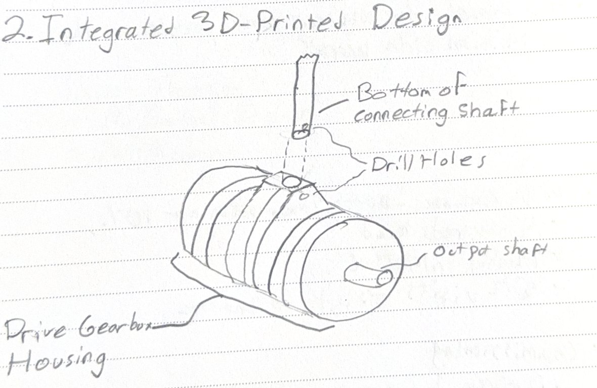
Build the shaft receiver directly into the gearbox housing.
Replacing the clamp bracket with integrated geometry removed the stack-up that was causing the flex — and simplified the bolt pattern in the process.
Picking the connecting shaft material.
Used EES to evaluate the shaft under combined rover weight, motor torque, impact, and shear loading. Compared three candidate materials against a Von Mises safety-factor criterion (target > 1.8).
| Material | Safety Factor | Decision |
|---|---|---|
| 6061 Aluminum | 2.08 | Selected — met SF target, lowest weight + cost |
| 4130 Steel | 3.45 | Stronger — but heavier, more expensive |
| Titanium | 6.59 | Highest strength — cost-prohibitive |
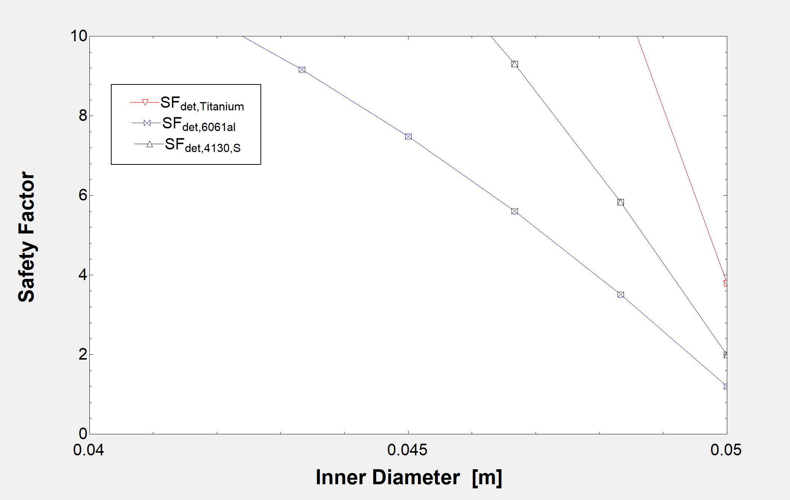
TargetSF ≥ 1.80 Selected6061 Al · SF 2.08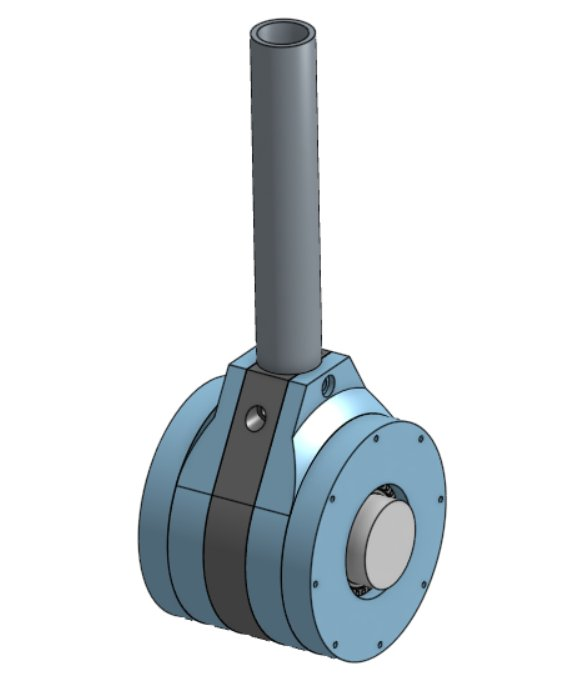
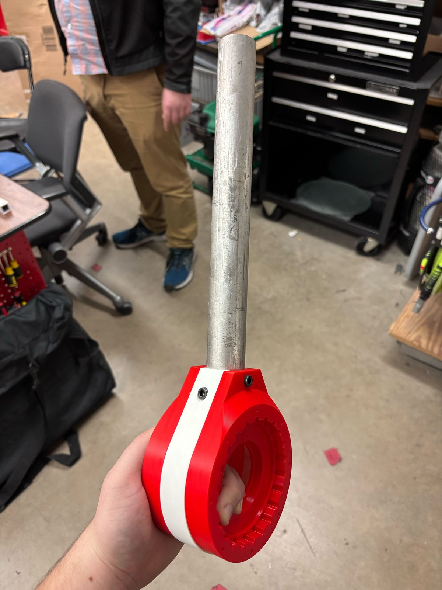
Two-Stage Gear Reducer + ML Optimization.
A 4.5:1 reverted reducer designed by hand to AGMA / Buckingham — then re-evaluated against 2,500 candidates by a Random Forest surrogate I built. Found a feasible variant 12% lighter — at the cost of fatigue-life margin (SF_gear 1.31 → 1.22).
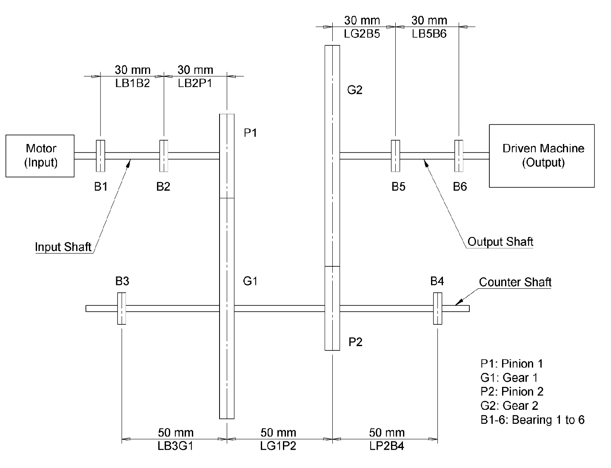
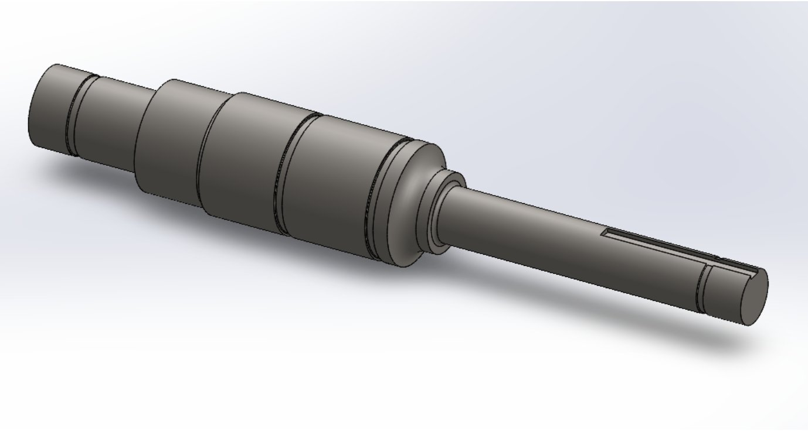
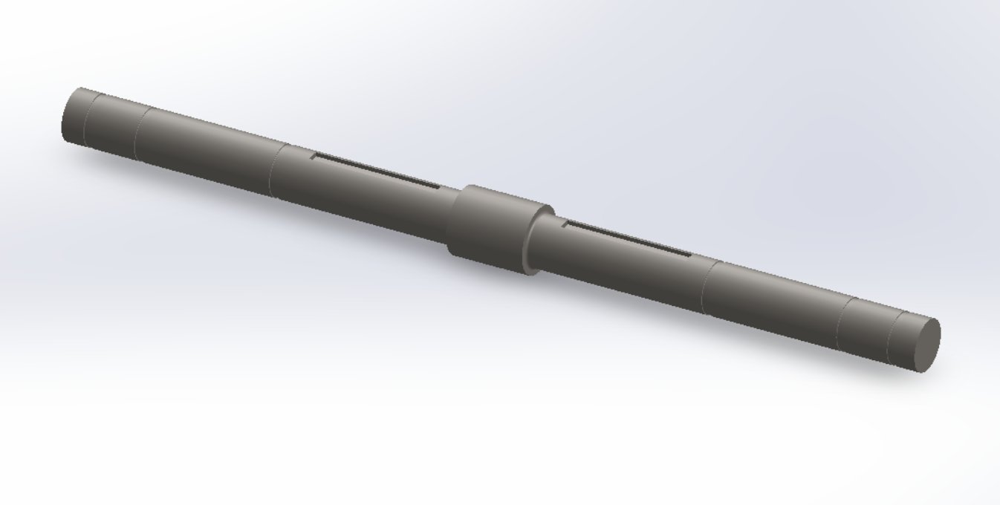
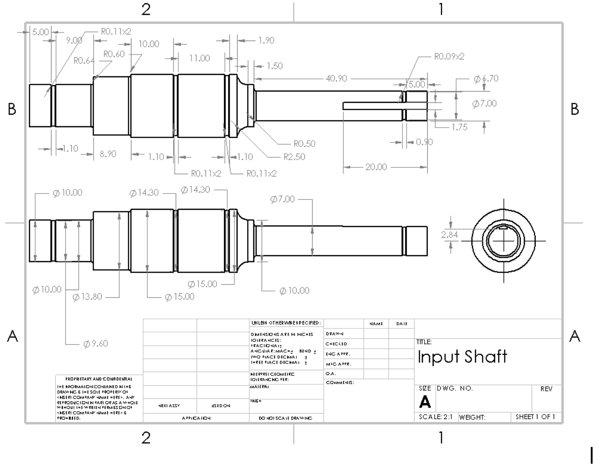
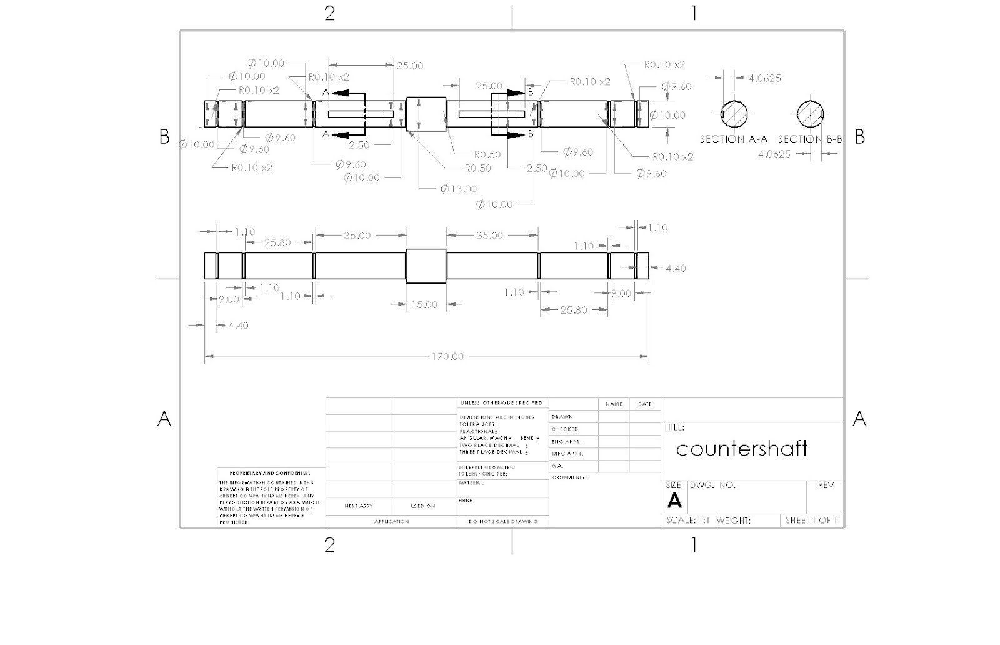
Design a 4.5:1 reducer that meets strength, fatigue, and manufacturing.
Team brief: hit reduction ratio, meet 99.9% reliability, balance reliability against weight and manufacturability, produce ready-to-fab CAD and drawings.
Hand-analyzed shafts and gears. Then automated the sweep.
Sized shafts (EES) and gears (AGMA + Buckingham). Selected 1045 HR steel shafts and AISI 4140 gears. Then converted the EES design into a Python analytical model and trained a Random Forest surrogate to predict performance.
Baseline shipped. Then found 12% lighter still feasible.
Baseline met every spec. Surrogate-driven sweep across 2,500 candidates surfaced a variant at 6.34 kg (vs. 7.19 kg baseline), holding SF_shaft ≥ 1.5 and SF_gear ≥ 1.2.
Hand-analyzed shafts and gears.
Performed shaft force, bending, and torsional analysis in EES; sized minimum shaft diameters from fatigue and stress criteria; sized gears using AGMA and Buckingham; selected materials by strength, fatigue life, and manufacturability; validated the assembly in SolidWorks.
Baseline result. 1045 HR steel shafts (7 / 9 / 10 mm) and AISI 4140 normalized gears (35 mm pinion, 22.5 mm gear face widths). Minimum safety factors of 1.58 (shaft) and 1.31 (gear). Manufacturing-ready CAD and drawings produced.
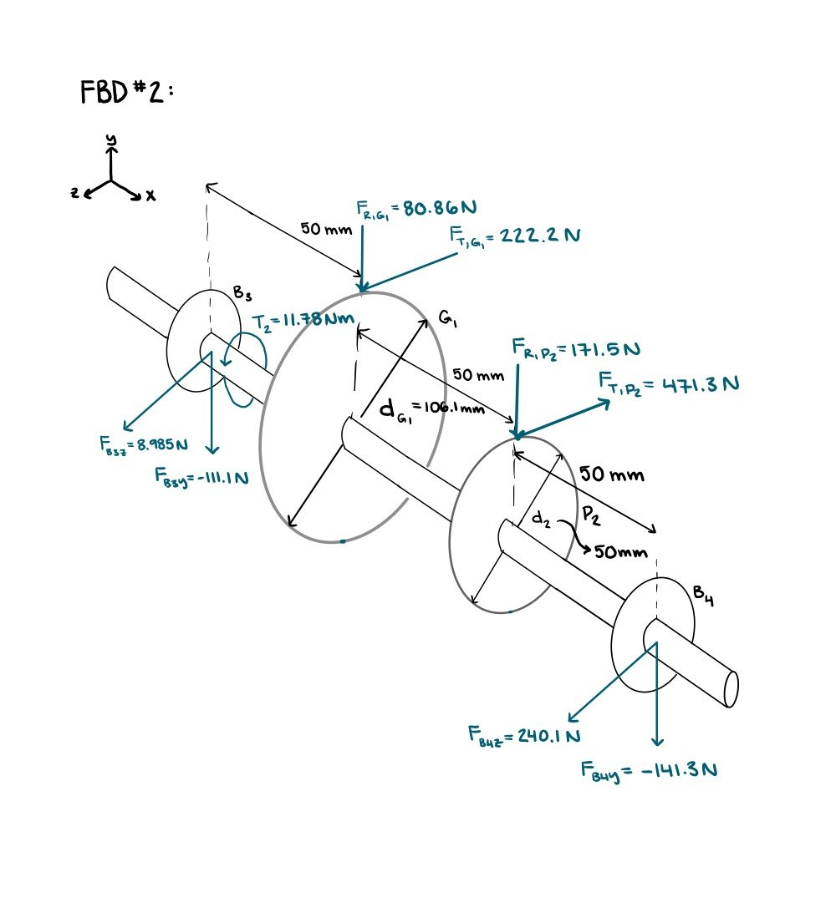
Sweep the design space, train a surrogate.
Converted the EES design into a Python analytical model, performed an automated sweep across 2,500 candidate reducers, and trained a Random Forest surrogate to predict performance from the five geometric inputs (d_in, d_co, d_out, b_p, b_g) without re-running the full analysis on every candidate.
Result: 12% lighter, still inside spec.
| Design | Mass | SF Shaft | SF Gear |
|---|---|---|---|
| Baseline | 7.19 kg | 1.58 | 1.31 |
| Optimized | 6.34 kg | 1.58 | 1.22 |
The surrogate replaced a per-design analytical evaluation with a near-instant prediction — fast enough to sweep 2,500 candidates in seconds instead of hours. The trade-off is explicit: gear safety factor dropped from 1.31 → 1.22, closer to the 1.20 constraint, so the optimized variant has less fatigue-life margin than the baseline. Both stay inside the spec; the baseline is the safer ship.
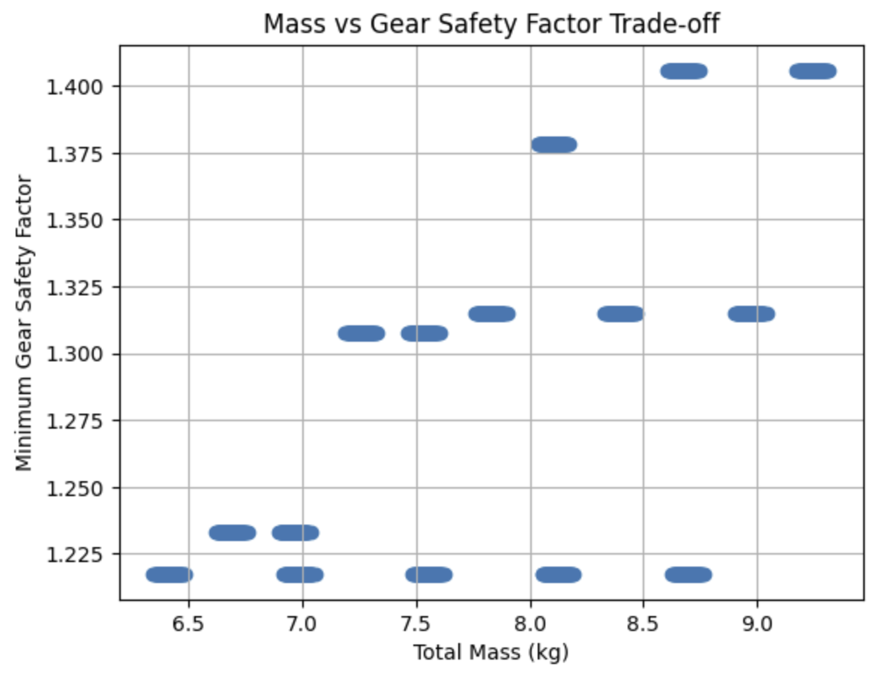
Baseline7.19 kg · SF 1.31 Optimized6.34 kg · SF 1.22 · –12%- Converted EES design → Python analytical model
- Swept 2,500 candidate designs
- Surrogate cut per-design eval ~1000× — enabling the 2,500 sweep
- Found a feasible design 12% lighter
- Held shaft / gear constraints (gear margin tightened)
- Demonstrated ML for engineering design eval
The Random Forest surrogate fits a deterministic analytical model — that's why it scores so cleanly. A second-order polynomial response surface would have done the same job with a fraction of the code; the ML framing is real, but it's the sweep, not the model class, that did the work. I'd lead with that next time.
I'd also run a finite-life fatigue check on the optimized variant before recommending it. Dropping SF_gear from 1.31 to 1.22 stays inside the static constraint, but it shortens the design life — and the team's brief didn't quantify that trade. Owning that question is the next step.
CO₂ Alert System for Hibernation Research.
A noninvasive CO₂ monitoring enclosure that alerts researchers when hibernating ground squirrels re-enter interbout euthermia. Delivered under budget, working in cold storage.
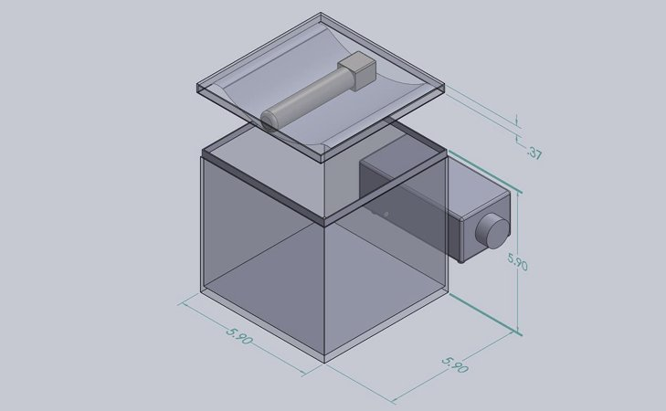
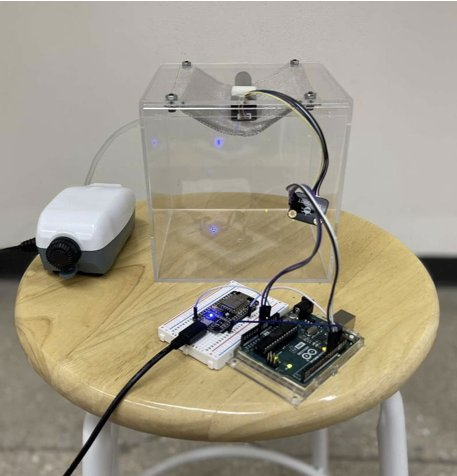
Researchers had no way to know when squirrels woke.
Manual monitoring was inefficient — animals were housed remotely in dark, refrigerated habitats. Any sensor system had to be noninvasive and survive the cold without disturbing hibernation.
Acrylic enclosure with a mesh-guarded CO₂ sensor.
Modeled the enclosure, lid, sensor placement, and air pump in SolidWorks. Selected acrylic and the wire mesh guard. Load-tested the mesh under 1 lb (≈ 3× squirrel weight). Wired the Arduino threshold-and-email logic.
9.84 s avg. alert. $149.20 / unit against a $300 budget.
Delivered working prototype to Dr. Sprenger, Dr. Sajdak, and Fauna Bio. Threshold tested at 5,000 ppm across 10 trials. Mesh held its load with no visible stress.
Alert latency averaged 9.84 seconds across 10 trials.
From CO₂ threshold crossing to email-in-inbox — measured under the actual refrigerated condition the system would operate in.
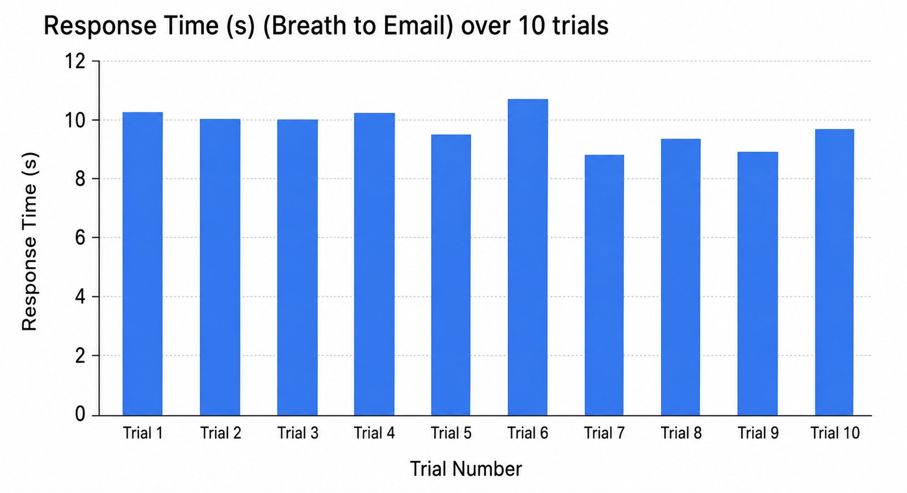
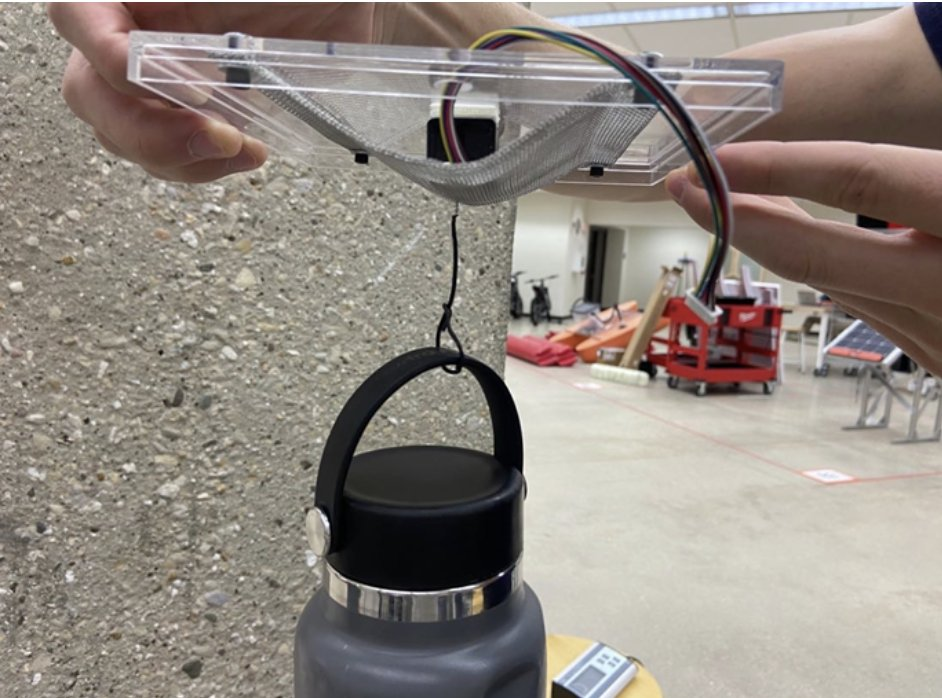